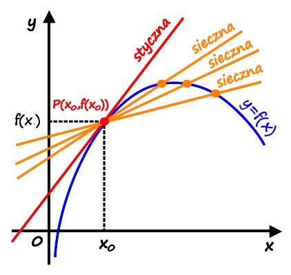

Definicja pochodnej funkcji

Załóżmy, że mamy daną funkcję f(x) oraz argument x0, w otoczeniu którego funkcja f(x) jest określona. Pochodną funkcji f(x) w punkcie x0 oznaczamy symbolem:
I jest definiowana również jako granica: (wzór na pochodną)
Zastosowania pochodnych funkcji w grafice komputerowej
- Kształt terenu: Pochodne mogą pomóc w ustalaniu nachylenia terenu w różnych punktach. Na przykład, gdy masz dane dotyczące wysokości terenu w formie siatki, pochodne mogą pomóc w obliczeniu, jak zmienia się nachylenie terenu, co jest istotne dla wyświetlenia jego trójwymiarowej struktury.
- Oświetlenie: Pochodne mogą być używane do modelowania oświetlenia na powierzchniach obiektów. Kiedy promień światła pada na powierzchnię, pochodne mogą pomóc w określeniu kierunku i intensywności oświetlenia w każdym punkcie, co wpływa na sposób, w jaki widzimy obiekt na ekranie.
- Cienie: Pochodne mogą również pomóc w generowaniu realistycznych cieni na obiektach. Poprzez analizowanie kierunku i intensywności światła oraz struktury terenu, pochodne mogą pomóc w określeniu, gdzie powinny pojawić się cienie na powierzchni obiektów, aby wyglądały one naturalnie.
- Teksturowanie: Pochodne mogą być również używane do teksturowania obiektów, czyli nakładania na nie tekstur, które nadają im szczegóły i realistyczność. Analizując zmiany koloru i intensywności na teksturze w różnych punktach, pochodne mogą pomóc w płynnym przejściu między różnymi teksturami na powierzchni obiektu.
- Efekty specjalne: Wreszcie, pochodne są używane do tworzenia różnych efektów specjalnych, takich jak rozbłyski, refleksy czy efekty płynów. Poprzez analizę zmian w intensywności i kierunku światła oraz tekstur, pochodne mogą pomóc w generowaniu wspaniałych efektów, które dodają głębi i realizmu do obrazów.